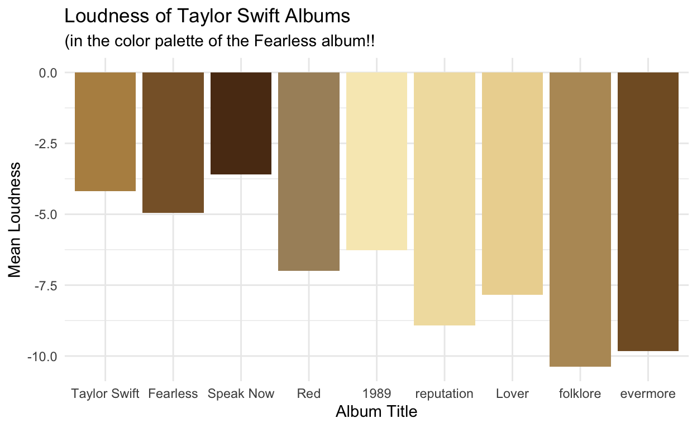
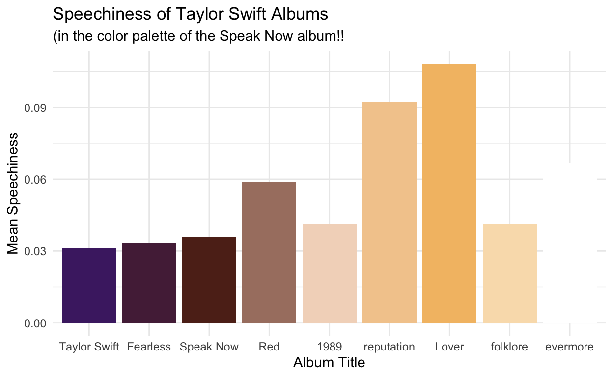
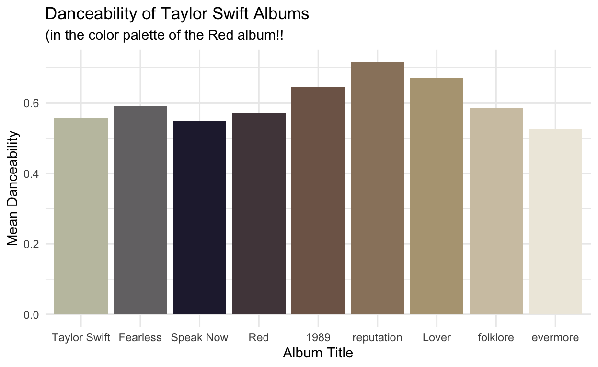
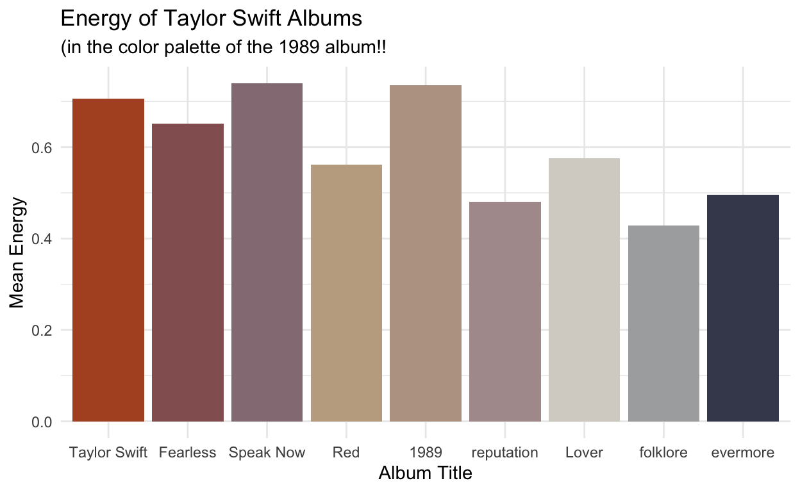
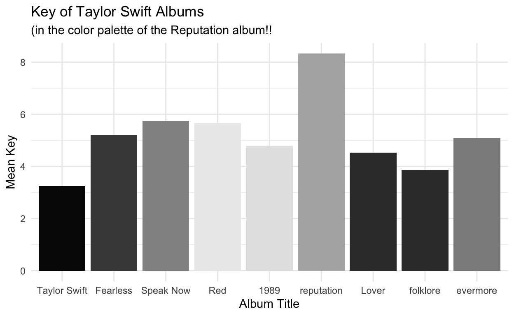
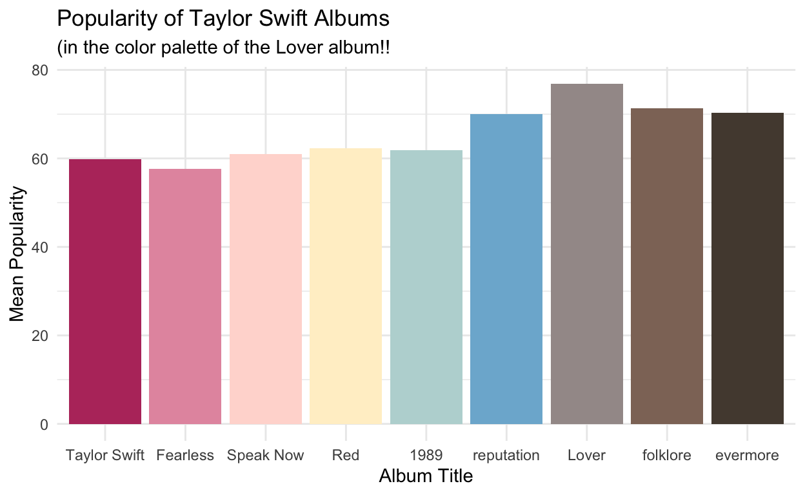
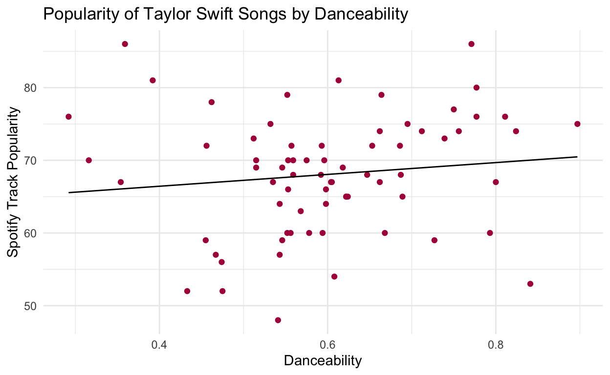
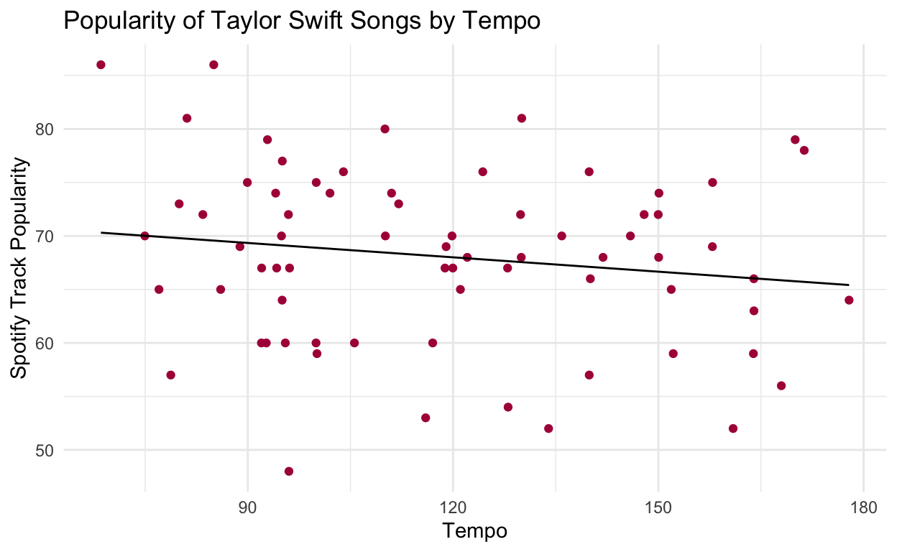
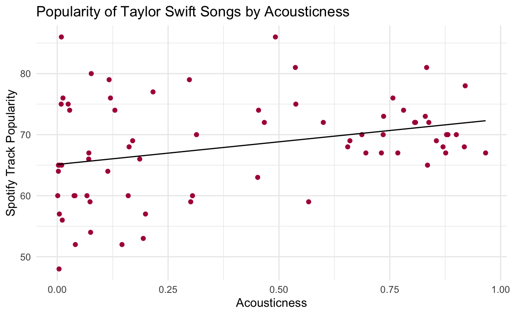
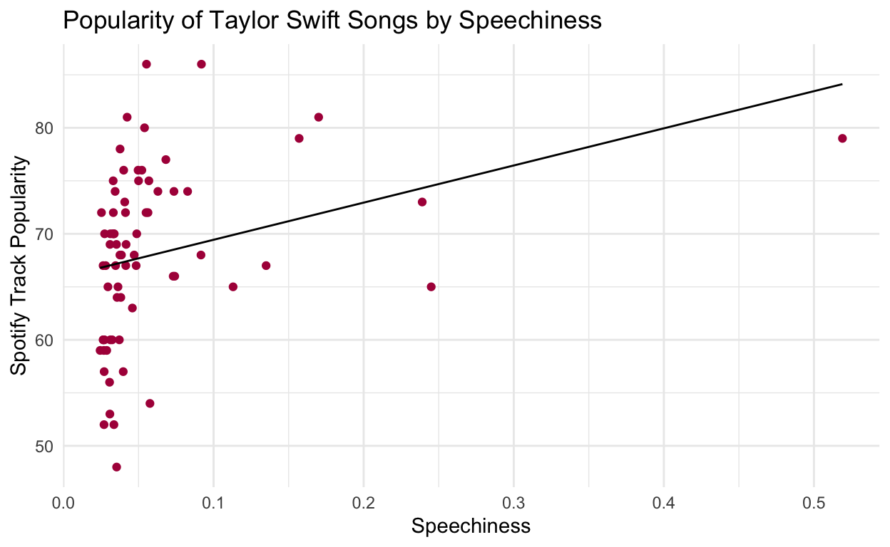

This Tidy Tuesday is from 2 months ago, but Taylor is forever.
These Tidy Tuesday analyses and visualizations come from the Tidy Tuesday Github repository for September 14, 2021. The data in the repository comes from Data.World through Sean Miller, Billboard.com and Spotify.
I turned 13 years old in the year 2008. This is the same year Taylor Swift’s second album, Fearless was released to the world. Taylor wrote and recorded the lyrics, bursting with fairytale imagery and the highs and lows of life as a teenage girl. I was smitten. As a teenager, I came to know every lyric of every song and plastered my room in imgages of Swift pulled from magazines.
I’m not at the same level of fandom as I was in 9th grade:
… but I still feel like this:
when Taylor releases new music!
When I saw that this Tidy Tuesday dataset was rich with TSwift data, I knew it would be fun for me to practice my data wrangling and visualizations with it. What follows are analyses of Taylor Swift songs by album and by audio features. Hopefully fellow Swifty data scientists will find it as fearless, enchanted, and wonderstruck as I do!
#read in the data
tuesdata <- tidytuesdayR::tt_load('2021-09-14')
audio_features <- tuesdata$audio_features
#read in csv
audio_features_metadata <- read.csv("audio_features_metadata.csv")
I used the Google Chrome plugin “color picker,” to pick colors from the album art of each of Taylor’s albums for use in these data visualizations. If you don’t like the color schemes, you’ll have to talk to the Swift franchise; sorry!
album_cols <- c("#0BA5D7", "#D8BD7D", "#7D4884", "#AE1848", "#96818F", "#0A0A0A", "#FEB5DC", "#919191", "#D85F2E")
I used my album_cols palette to create this colorful table with the gt package. The variables in the audio_features dataset are confusing to understand without definitions to refer to.
audio_features_metadata %>%
gt() %>%
tab_header(
title = "Audiofeatures Dataset Variables Defined",
subtitle = "Many of the variables used in this dataset are confusing metrics, like 'danceability' - What is that? This table contains definitions you help you navigate my analyses."
) %>%
data_color(
columns = vars(variable),
colors = scales::col_factor(
palette = album_cols,
domain = NULL)
)
| Audiofeatures Dataset Variables Defined | ||
|---|---|---|
| Many of the variables used in this dataset are confusing metrics, like 'danceability' - What is that? This table contains definitions you help you navigate my analyses. | ||
| variable | class | description |
| song_id | character | Song ID |
| performer | character | Performer name |
| song | character | Song |
| spotify_genre | character | Genre |
| spotify_track_id | character | Track ID |
| spotify_track_preview_url | character | Spotify URL |
| spotify_track_duration_ms | double | Duration in ms |
| spotify_track_explicit | logical | Is explicit |
| spotify_track_album | character | Album name |
| danceability | double | Danceability describes how suitable a track is for dancing based on a combination of musical elements including tempo, rhythm stability, beat strength, and overall regularity. A value of 0.0 is least danceable and 1.0 is most danceable. |
| energy | double | Energy is a measure from 0.0 to 1.0 and represents a perceptual measure of intensity and activity. Typically, energetic tracks feel fast, loud, and noisy. For example, death metal has high energy, while a Bach prelude scores low on the scale. Perceptual features contributing to this attribute include dynamic range, perceived loudness, timbre, onset rate, and general entropy. |
| key | double | The estimated overall key of the track. Integers map to pitches using standard Pitch Class notation . E.g. 0 = C, 1 = C♯/D♭, 2 = D, and so on. If no key was detected, the value is -1. |
| loudness | double | The overall loudness of a track in decibels (dB). Loudness values are averaged across the entire track and are useful for comparing relative loudness of tracks. Loudness is the quality of a sound that is the primary psychological correlate of physical strength (amplitude). Values typical range between -60 and 0 db. |
| mode | double | Mode indicates the modality (major or minor) of a track, the type of scale from which its melodic content is derived. Major is represented by 1 and minor is 0. |
| speechiness | double | Speechiness detects the presence of spoken words in a track. The more exclusively speech-like the recording (e.g. talk show, audio book, poetry), the closer to 1.0 the attribute value. Values above 0.66 describe tracks that are probably made entirely of spoken words. Values between 0.33 and 0.66 describe tracks that may contain both music and speech, either in sections or layered, including such cases as rap music. Values below 0.33 most likely represent music and other non-speech-like tracks. |
| acousticness | double | A confidence measure from 0.0 to 1.0 of whether the track is acoustic. 1.0 represents high confidence the track is acoustic. |
| instrumentalness | double | Predicts whether a track contains no vocals. “Ooh” and “aah” sounds are treated as instrumental in this context. Rap or spoken word tracks are clearly “vocal”. The closer the instrumentalness value is to 1.0, the greater likelihood the track contains no vocal content. Values above 0.5 are intended to represent instrumental tracks, but confidence is higher as the value approaches 1.0. |
| liveness | double | Detects the presence of an audience in the recording. Higher liveness values represent an increased probability that the track was performed live. A value above 0.8 provides strong likelihood that the track is live. |
| valence | double | A measure from 0.0 to 1.0 describing the musical positiveness conveyed by a track. Tracks with high valence sound more positive (e.g. happy, cheerful, euphoric), while tracks with low valence sound more negative (e.g. sad, depressed, angry). |
| tempo | double | The overall estimated tempo of a track in beats per minute (BPM). In musical terminology, tempo is the speed or pace of a given piece and derives directly from the average beat duration. |
| time_signature | double | Time signature |
| spotify_track_popularity | double | Popularity |
audio_features data for Taylor Swift dataThe audio_features dataset has contains the audio features of nearly 30,000 songs. I’m not sure how the songs were selcted, but in exploring the data, the observation include work from Louis Armstrong to Beyonce Knowles to Dolly Parton to U2. Because I am only interested in Taylor Swift’s music for this analysis, I filtered for only her music below.
Taylor Swift has lots of oddball singles and deluxe albums featuring bonus tracks, which I thought would muddy the data by 1.) including duplicate songs from original albums and their deluxe versions and 2.) giving too many albums to compare, and albums that are not truly representative of Taylor’s various “eras.” Her Christmas album, for example, would not be interesting to compare to her main body of work, nor would her singles from the Hunger Games soundtrack. I stick to the main 9 albums here, in chronological order: Taylor Swift, Fearless, Speak Now, Red, 1989, reputation, Lover, folklore, and evermore.
Filtering for the more recent two albums, folklore and evermore, was difficult because the formatting of the data changed between Lover and folklore. Instead of simply the album names, the spotify_track_album column began to include url-like strings of nonsense that did not resemble an album name. I used the function grepl() to specify a string within that nonsense, the actual title names, and pull the songs from those albums into my dataset. I then mutated them using str_detect() and replaced them with simply the album name!
#create a taylor swift subset with desired albums
tswift_data <- audio_features %>%
filter(performer == "Taylor Swift") %>%
filter(spotify_track_album == "Taylor Swift" |
spotify_track_album == "Fearless" |
spotify_track_album == "Speak Now" |
spotify_track_album == "Red" |
spotify_track_album == "1989" |
spotify_track_album == "reputation" |
spotify_track_album == "Lover" |
grepl("folklore", spotify_track_album) |
grepl("evermore", spotify_track_album))
#rename folklore and evermore occurances to simply the album names
tswift_data <- tswift_data %>%
mutate(spotify_track_album = case_when(
str_detect(spotify_track_album, "folklore") ~ "folklore",
str_detect(spotify_track_album, "evermore") ~ "evermore",
TRUE ~ spotify_track_album
))
Then, I made a new dataframe, data_by_album, with a group_by() album name and summarize() to return mean audio features for each album. This prepared a dataset I could use to compare sound qualities across Swift’s discography.
I also defined levels for the albums based on year of release. This way, the albums would appear in chronological order in my visualizations, which made more sense in my Swifty brain for comparing all 9 albums.
#group by album and summarize mean audio features per album
data_by_album <- tswift_data %>%
group_by(spotify_track_album) %>%
summarise(mean_danceability = mean(danceability),
mean_energy = mean(energy),
mean_key = mean(key),
mean_loudness = mean(loudness),
mean_speechiness = mean(speechiness),
mean_acousticness = mean(acousticness),
mean_instrumentalness = mean(instrumentalness),
mean_liveness = mean(liveness),
mean_valence = mean(valence),
mean_tempo = mean(tempo),
mean_popularity = mean(spotify_track_popularity))
#define levels based on album chronology
data_by_album$spotify_track_album = factor(data_by_album$spotify_track_album,
levels = c("Taylor Swift",
"Fearless",
"Speak Now",
"Red",
"1989",
"reputation",
"Lover",
"folklore",
"evermore"))
For the non-Swifies, I am putting a summary of fast takeaways and weird observations here. I think I’ll keep playing with this data for…..ever as I grow my lil data science muscles, but here are some visualizations I wrote about. I’ll update this blog post as I work on this really fun data with more takeaways!
One of the most suspicious results, which made me question the data quality is the difference in loudness between Taylor’s most recent albums and all her previous ones. This was surprising considering the genre of the most recent albums. folklore and evermore are folk-inspired. Swift is quoted as describing her feelings from evermore as ones of “quiet conclusion and sort of this weird serenity.”
loudness <- ggplot(data = data_by_album, aes(x = spotify_track_album, y = mean_loudness)) +
geom_histogram(stat = "identity", aes(fill = spotify_track_album)) +
theme_minimal() +
theme(legend.position = "none") +
labs(title = "Loudness of Taylor Swift Albums",
subtitle = "(in the color palette of the Fearless album!!",
x = "Album Title",
y = "Mean Loudness") +
scale_fill_taylor(palette = "fearless", guide = "none")
loudness

I showed a few of my friends this project and they asked about the “speechiness” audio features - doesn’t Taylor Swift speak in all of her songs? She does sing in all of her songs, but a look at the metadata tells you that “speechiness” is defined as the amount of spoken word on a track. Anything between 0.33 and 0.66 is a mix of singing and speech on a track, and anything more than 0.66 is like an audio book or spoken word. Speechiness in Taylor’s music is less than 0.33, so not speechy at all! It makes sense that reputation ranks higher relative to other albums in this feature, since it features a little rap.
speechiness <- ggplot(data = data_by_album, aes(x = spotify_track_album, y = mean_speechiness)) +
geom_histogram(stat = "identity", aes(fill = spotify_track_album)) +
theme_minimal() +
theme(legend.position = "none") +
labs(title = "Speechiness of Taylor Swift Albums",
subtitle = "(in the color palette of the Speak Now album!!",
x = "Album Title",
y = "Mean Speechiness") +
scale_fill_taylor(palette = "speakNow", guide = "none")
speechiness

This is all just me playing with the data. No writing, just Scout, Taylor, and some code chunks. It’s fun to practice with this dataset, so I will definitely keep working with it as a break from homework. I plan to run some linear regressions, which I’ve already started, and add interpretation. I also want to do some hypothesis testing with this data. I can tell the source for the data changed over time, so it might be interesting to see if the loudness, for example, in the most recent albums, has a significantly significant difference from previous albums.
danceability <- ggplot(data = data_by_album, aes(x = spotify_track_album, y = mean_danceability)) +
geom_histogram(stat = "identity", aes(fill = spotify_track_album)) +
theme_minimal() +
theme(legend.position = "none") +
labs(title = "Danceability of Taylor Swift Albums",
subtitle = "(in the color palette of the Red album!!",
x = "Album Title",
y = "Mean Danceability") +
scale_fill_taylor(palette = "Red", guide = "none")
danceability

energy <- ggplot(data = data_by_album, aes(x = spotify_track_album, y = mean_energy)) +
geom_histogram(stat = "identity", aes(fill = spotify_track_album)) +
theme_minimal() +
theme(legend.position = "none") +
labs(title = "Energy of Taylor Swift Albums",
subtitle = "(in the color palette of the 1989 album!!",
x = "Album Title",
y = "Mean Energy") +
scale_fill_taylor(palette = "taylor1989", guide = "none")
energy

key <- ggplot(data = data_by_album, aes(x = spotify_track_album, y = mean_key)) +
geom_histogram(stat = "identity", aes(fill = spotify_track_album)) +
theme_minimal() +
theme(legend.position = "none") +
labs(title = "Key of Taylor Swift Albums",
subtitle = "(in the color palette of the Reputation album!!",
x = "Album Title",
y = "Mean Key") +
scale_fill_taylor(palette = "reputation", guide = "none")
key

popularity <- ggplot(data = data_by_album, aes(x = spotify_track_album, y = mean_popularity)) +
geom_histogram(stat = "identity", aes(fill = spotify_track_album)) +
theme_minimal() +
theme(legend.position = "none") +
labs(title = "Popularity of Taylor Swift Albums",
subtitle = "(in the color palette of the Lover album!!",
x = "Album Title",
y = "Mean Popularity") +
scale_fill_taylor(palette = "lover", guide = "none")
popularity

ols_danceability <- lm(data = tswift_data, spotify_track_popularity ~ danceability)
summary(ols_danceability) %>%
tidy() %>%
gt()
| term | estimate | std.error | statistic | p.value |
|---|---|---|---|---|
| (Intercept) | 63.174235 | 4.754202 | 13.288084 | 1.069703e-20 |
| danceability | 8.136838 | 7.758330 | 1.048787 | 2.979358e-01 |
ols_danceability_tempo <- lm(data = tswift_data, spotify_track_popularity ~ danceability + tempo + (danceability * tempo))
summary(ols_danceability_tempo) %>%
tidy() %>%
gt()
| term | estimate | std.error | statistic | p.value |
|---|---|---|---|---|
| (Intercept) | 89.7606092 | 19.8410224 | 4.5239911 | 2.545918e-05 |
| danceability | -31.0148124 | 34.8709256 | -0.8894175 | 3.769611e-01 |
| tempo | -0.2389066 | 0.1785567 | -1.3379871 | 1.854242e-01 |
| danceability:tempo | 0.3564445 | 0.3169145 | 1.1247340 | 2.647151e-01 |
ggplot(data = tswift_data, aes(x = danceability, y = spotify_track_popularity)) +
geom_point(color = "#AE1848") +
geom_line(data = ols_danceability, aes(y = .fitted)) +
theme_minimal() +
labs(title = "Popularity of Taylor Swift Songs by Danceability",
x = "Danceability",
y = "Spotify Track Popularity")

ols_tempo <- lm(data = tswift_data, spotify_track_popularity ~ tempo)
summary(ols_tempo) %>%
tidy() %>%
gt()
| term | estimate | std.error | statistic | p.value |
|---|---|---|---|---|
| (Intercept) | 73.37083397 | 4.12193465 | 17.800096 | 1.704171e-27 |
| tempo | -0.04473769 | 0.03374115 | -1.325909 | 1.892427e-01 |
ggplot(data = tswift_data, aes(x = tempo, y = spotify_track_popularity)) +
geom_point(color = "#AE1848") +
geom_line(data = ols_tempo, aes(y = .fitted)) +
theme_minimal() +
labs(title = "Popularity of Taylor Swift Songs by Tempo",
x = "Tempo",
y = "Spotify Track Popularity")

summ_tempo <- ols_tempo %>%
summary()
summ_tempo
Call:
lm(formula = spotify_track_popularity ~ tempo, data = tswift_data)
Residuals:
Min 1Q Median 3Q Max
-21.0754 -5.0225 0.4435 5.2930 16.4330
Coefficients:
Estimate Std. Error t value Pr(>|t|)
(Intercept) 73.37083 4.12193 17.800 <2e-16 ***
tempo -0.04474 0.03374 -1.326 0.189
---
Signif. codes: 0 '***' 0.001 '**' 0.01 '*' 0.05 '.' 0.1 ' ' 1
Residual standard error: 8.103 on 69 degrees of freedom
Multiple R-squared: 0.02485, Adjusted R-squared: 0.01071
F-statistic: 1.758 on 1 and 69 DF, p-value: 0.1892#r^2 = 0.02485
ols_acousticness <- lm(data = tswift_data, spotify_track_popularity ~ acousticness)
summary(ols_acousticness) %>%
tidy() %>%
gt()
| term | estimate | std.error | statistic | p.value |
|---|---|---|---|---|
| (Intercept) | 65.118603 | 1.419408 | 45.877289 | 1.970049e-53 |
| acousticness | 7.412888 | 2.716302 | 2.729036 | 8.052126e-03 |
ggplot(data = tswift_data, aes(x = acousticness, y = spotify_track_popularity)) +
geom_point(color = "#AE1848") +
geom_line(data = ols_acousticness, aes(y = .fitted)) +
theme_minimal() +
labs(title = "Popularity of Taylor Swift Songs by Acousticness",
x = "Acousticness",
y = "Spotify Track Popularity")

summ_accousticness <- ols_acousticness %>%
summary()
summ_accousticness
Call:
lm(formula = spotify_track_popularity ~ acousticness, data = tswift_data)
Residuals:
Min 1Q Median 3Q Max
-17.1488 -5.3399 -0.4974 4.3447 20.8125
Coefficients:
Estimate Std. Error t value Pr(>|t|)
(Intercept) 65.119 1.419 45.877 < 2e-16 ***
acousticness 7.413 2.716 2.729 0.00805 **
---
Signif. codes: 0 '***' 0.001 '**' 0.01 '*' 0.05 '.' 0.1 ' ' 1
Residual standard error: 7.796 on 69 degrees of freedom
Multiple R-squared: 0.09742, Adjusted R-squared: 0.08434
F-statistic: 7.448 on 1 and 69 DF, p-value: 0.008052#r^2 = 0.09742
ols_speechiness <- lm(data = tswift_data, spotify_track_popularity ~ speechiness)
summary(ols_speechiness) %>%
tidy() %>%
gt()
| term | estimate | std.error | statistic | p.value |
|---|---|---|---|---|
| (Intercept) | 65.93397 | 1.231724 | 53.529839 | 6.260601e-58 |
| speechiness | 35.03886 | 13.359345 | 2.622798 | 1.072452e-02 |
summ_speechiness <- ols_speechiness %>%
summary()
summ_speechiness
Call:
lm(formula = spotify_track_popularity ~ speechiness, data = tswift_data)
Residuals:
Min 1Q Median 3Q Max
-19.1743 -5.9891 0.4157 5.3334 18.1284
Coefficients:
Estimate Std. Error t value Pr(>|t|)
(Intercept) 65.934 1.232 53.530 <2e-16 ***
speechiness 35.039 13.359 2.623 0.0107 *
---
Signif. codes: 0 '***' 0.001 '**' 0.01 '*' 0.05 '.' 0.1 ' ' 1
Residual standard error: 7.825 on 69 degrees of freedom
Multiple R-squared: 0.09066, Adjusted R-squared: 0.07748
F-statistic: 6.879 on 1 and 69 DF, p-value: 0.01072#r^2 = 0.09066
ggplot(data = tswift_data, aes(x = speechiness, y = spotify_track_popularity)) +
geom_point(color = "#AE1848") +
geom_line(data = ols_speechiness, aes(y = .fitted)) +
theme_minimal() +
labs(title = "Popularity of Taylor Swift Songs by Speechiness",
x = "Speechiness",
y = "Spotify Track Popularity")

Distill is a publication format for scientific and technical writing, native to the web.
Learn more about using Distill at https://rstudio.github.io/distill.